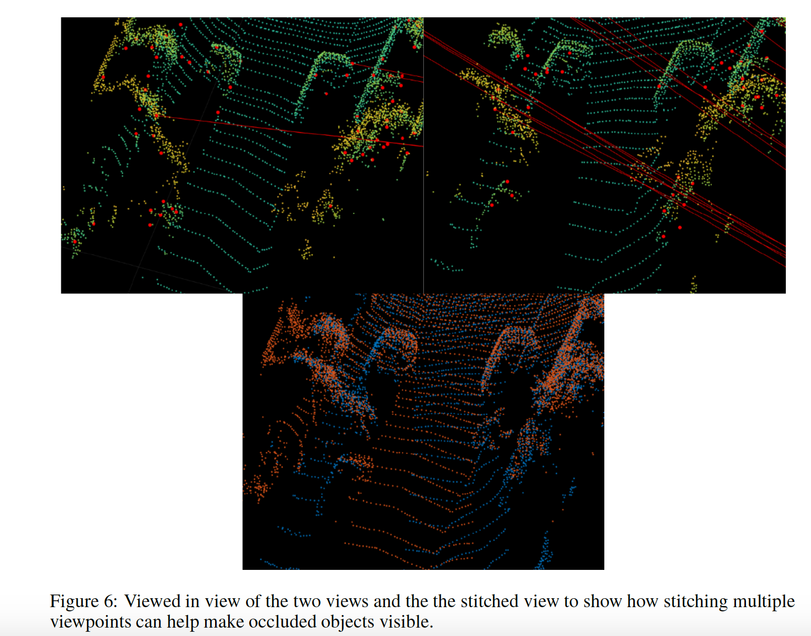

I am currently working as a Perception Engineer working on the Neural Networks Team at Optimus Ride, an Autonomous Vehicle Startup.
My work deals with Computer Vision, and how Autonomous Vehicles should robustly perceive the world around us to safely complete the task for Driving.
In particular, I spend a majority of my time on Multi-Task Learning, Camera Based Traffic Light Signal Estimation,
and how to sample and bin(annotate) real world data (Lidar and Camera)
for robust representations.
Besides Computer Vision, I am also interested in the related fields of Multi-Task Learning, Representation Learning,
how to design Software 2.0 for AI Engineering,
and Robotics.
Other than this, I love everything about the game of tennis (NTRP Rating 4.5/5.0 on a good day), and also love to spend time in nature. I'm always looking for someone to hit with.
Multi-Task Learning, Camera Based Traffic Light Signal Detection+Estimation, Data Annotation+Sampling: Scale.ai PR Link
Aug 2018 - Dec'18
Perception Engineer Intern, Optimus Ride
Perception Team
Camera Based Traffic Light Neural Networks Classification, Traffic Signal Mapping. (Joined Full Time after offer)
May 2018 - Aug'18
Software Engineer Intern, Schlumberger
Cloud Software Team
Published in the North America Wide Internal Q4 AI Newsletter on
”Generation of Synthetic Imaging using GANs in the oil industry", Kushagra Tiwary.
The article showed how oil companies can combat the problem of lack of imaging data in the oil industry in applications
such as estimating the porosity in thin sections images by generating Synthetic data using GANs. I showed that the
problem of porosity estimation and segmentation on large high-resolution images (taken at different magnifications) is
actually very similar to the problem in Healthcare. The full Article is company property, but a certain subset of the article
(allowed parts for external viewing) was published
here.
Main Internship Project: Implemented a Hyperledger Fabric blockchain based micro service to validate
the concept of securing data and contracts in a transparent way between Schlumberger and its clients.
Professional Vice President IEEE UIUC, Champaign, IL
Corporate & Professional Committees, ECE@Illinois
Primary contact of IEEE UIUC for scheduling and managing Company relations to host
tech talks and events with the department.
(Hover over the image to magnify it)

V2V Lidar Communication for Autonomous Vehicles in Occluded Environments (2019)
Mark Craft, Kushagra Tiwary
In a world full of self driving cars, Vehicle-2-Vehicle communication (V2V) will
be key to ensuring safety especially while operating in congested and occluded
environments. We use Point-Cloud Alignment from different viewpoints to show
how Lidar data can be leveraged from different vehicles to find occluded objects
and subsequently notify the other car. Advised by
Prof. Sayan Mitra.
ECE 543 Computer Vision Final Research Paper: GANs for Mobile Design (2019)
Akhil Alapaty, Mark Craft, Kushagra Tiwary
Currently, mobile app design lacks a system that provide designers with a visual cue
to show what their designs may end up looking like.
When a user wants to design a mockup of a mobile UI, it’s difficult to imagine how the
end app using that layout could look like.
By using a generative model, such as GANs (Generative Adversarial Networks) and VAEs (Variational Autoencoders),
it is possible to show how the mockup could look like by learning the mapping between semantified UIs and
how they actually look.
Specifically, this problem can be treated like an image-to-image translation problem.
We also look at the inverse problem of semantic segmentation of a mobile app UI to
produce its semantified counterpart.
We treat the semantic segmentation problem as another image-to-image translation problem
where we reverse the input and output images.
We propose an end-to-end pipeline to detect Breast Cancer tumorous regions on Whole
Slide Images by detecting for possible red flag features using deep learning. We do so by
first extracting features that we deem relevant to a higher probability of Breast Cancer, like
Lymphocyte and Nuclei patterns, and then analyze the spatial features of those binary maps
to predict if a proposed region is tumorous or benign. Advised by
Prof. Minh Do.
Simple Black Box Attacks on Neural Networks through Feature Extraction (2018)
Kushagra Tiwary, ECE/CS Undergraduate Research Symposium (PURE)
Neural Networks have gained tremendous popularity for achieving high performance in many classification tasks,
however, these networks have been shown repeatedly to very perceptible to adversarial attacks.
In this paper we show the response of two different network architectures on the MNIST dataset
by conducting black-box adversarial attacks. We show that simply through perturbing relevant features
extracted using traditional and widely used CV feature extractors such as
Low/High Pass, Gabor Filter, HOG Features, Corner Detection we
can achieve a high classification errors in both the networks. We conclude that this is inline with the idea that the
initial layers of the network extract similar features. Moreover, we also show how employing these techniques
during training as a form of data augmentation can make these networks more robust to susceptible attacks.
Advised by
Prof. Bindschaedler.
ECE 598AV Final Research Paper: Multi-Agent Capture The Flag (2018)
Kushagra Tiwary
Using reinforcement learning with classic path planning algorithms to solve the partial
observability problem in a capture the flag setting game - the visible states are subset of
all possible states. Heuristics and policies for the agents based on the actions, expected
rewards, a very sparse input space and partial observations at each time-step. Advised by
Dr. Girish Chowdhary/DAS Lab..
Under Construction as I move all published/unpublished writing from here and here.
A Quick Primer on Why I Write
I am grateful to have moved around the world even before finishing HS
(India, Yemen, Spain, Oklahoma, Houston, Kuwait). Through this, I had diverse experiences
and internalized the different ways people perceive reality. This then shaped me as I
picked up stuff from all vastly different cultures, languages and education systems. Dismantling and
understanding this,
from a philosphical and engineering prespective, lies at the core
of what I intend to achieve through my reading and writing.
I love thinking about the Perception Problem- how living beings perceive the real world
through sensory inputs (Pratyaksham) (touch, sight, hearing, smell and taste) and
how vastly different our understanding/inference (Anumanam) of the world depending on which part of the world you're from.
The representations that we internally build essentially forms the basis of action and decision making.
I like to explore these ideas in my free time through the lens of an AI Engineer (through my work),
Indian Philosophy (mostly Non-Dualism atm), a Neuroscience perspective, and meditation.
My ultimate hope is to internalize and figure out my own internal
representations and biases through deep work and deliberate practice in an effort to be a better human being.
Well that would be nice, wouldn’t it?
{kind=link}